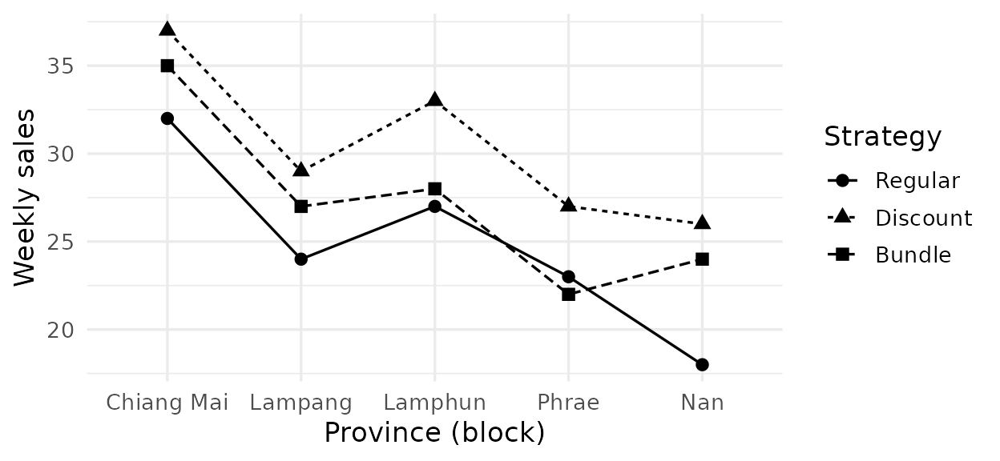

Analysis of Variance
Chapter 4 | 208272 Elementary Statistics for Social Sciences II
Asst. Prof. Dr. Parichart Pattarapanitchai
One-Way ANOVA: CRD
Learning Objectives
- Explain why we use ANOVA, not many \(t\) tests, to compare three or more means.
- Describe a completely randomized design (CRD) and the assumptions of one-way ANOVA.
- Calculate the ANOVA table by hand for a small data set.
- Read the output of
summary(aov(y ~ trt))in R and write the conclusion.
Concept
A retail chain wants to compare three pricing strategies. Testing each pair with a \(t\) test needs three tests; with five strategies it needs ten. Each test has a 5% chance of a Type I error, so the chance of at least one false “significant” result grows quickly. Analysis of variance (ANOVA) tests all the means at once: \[ H_0: \mu_1 = \mu_2 = \cdots = \mu_k \qquad H_1: \text{at least one } \mu_i \text{ is different} \]
In a completely randomized design (CRD) the treatments (here, pricing strategies) are assigned to experimental units (stores) completely at random.
The idea of ANOVA is to split the total variation in the data into two parts:
- variation between the treatment means (treatment sum of squares, SSTr)
- variation within the treatments (error sum of squares, SSE)
If the treatment means are really equal, the between-treatment variation is only random noise, about the same size as the within-treatment variation. The ratio of the two mean squares is an \(F\) statistic, as in Section 3.4.
Formulas and Conditions
Assumptions: independent random samples (units assigned at random); each population is normal; all populations have the same variance \(\sigma^2\).
With \(k\) treatments, \(n_i\) observations in treatment \(i\), \(N = \sum n_i\), treatment totals \(T_i\) and grand total \(G\):
| Quantity | Formula |
|---|---|
| Correction factor | \(\text{CF} = G^2/N\) |
| Total SS | \(\text{SST} = \sum y^2 - \text{CF}\) |
| Treatment SS | \(\text{SSTr} = \sum \dfrac{T_i^2}{n_i} - \text{CF}\) |
| Error SS | \(\text{SSE} = \text{SST} - \text{SSTr}\) |
ANOVA table
| Source | df | SS | MS | \(F\) |
|---|---|---|---|---|
| Treatments | \(k-1\) | SSTr | \(\text{MSTr} = \dfrac{\text{SSTr}}{k-1}\) | \(F_{\text{cal}} = \dfrac{\text{MSTr}}{\text{MSE}}\) |
| Error | \(N-k\) | SSE | \(\text{MSE} = \dfrac{\text{SSE}}{N-k}\) | |
| Total | \(N-1\) | SST |
Critical region: \(F_{\text{cal}} > F_{1-\alpha,\,k-1,\,N-k}\). The ANOVA \(F\) test is always right-sided: only a large between-treatment variation is evidence against \(H_0\).
In R: summary(aov(y ~ trt)). The row named after the treatment is the treatment row and Residuals is the error row.
Example
Example 4.1.1. A retail chain randomly assigns three pricing strategies (Regular, Discount, Bundle) to 15 similar stores, 5 stores each, and records weekly sales in hundreds of units:
| Strategy | Sales | Total | Mean |
|---|---|---|---|
| Regular | 21, 24, 19, 23, 18 | 105 | 21.0 |
| Discount | 28, 31, 26, 30, 27 | 142 | 28.4 |
| Bundle | 25, 22, 27, 24, 26 | 124 | 24.8 |
At \(\alpha\) = 0.05, test whether the mean weekly sales differ among the three strategies.
Solution
\(k\) = 3, \(N\) = 15, \(G\) = 371, \(\sum y^2\) = 9,371.
\[ \text{CF} = \frac{371^2}{15} = 9176.0667 \] \[ \text{SST} = 9,371 - 9176.0667 = 194.9333 \] \[ \text{SSTr} = \frac{105^2 + 142^2 + 124^2}{5} - 9176.0667 = 9313 - 9176.0667 = 136.9333 \] \[ \text{SSE} = 194.9333 - 136.9333 = 58 \]
| Source | df | SS | MS | \(F\) |
|---|---|---|---|---|
| Strategy | 2 | 136.9333 | 68.4667 | 14.166 |
| Error | 12 | 58 | 4.8333 | |
| Total | 14 | 194.9333 |
Step 1: Hypotheses. \(H_0: \mu_R = \mu_D = \mu_B\) \(\quad H_1:\) at least one mean is different
Step 2: Level of significance. \(\alpha\) = 0.05
Step 3: Test statistic. \(F_{\text{cal}} = \dfrac{68.4667}{4.8333} = 14.166\), df = (2, 12)
Step 4: p-value. From the R output below, p-value = 0.0007. (With the table: \(F_{0.95,\,2,\,12} = 3.89\), critical region \(F_{\text{cal}} > 3.89\).)
Step 5: Decision and interpretation. p-value = 0.0007 < \(\alpha\) = 0.05, so we reject \(H_0\). That is, the mean weekly sales are not all equal across the three pricing strategies at the 0.05 level of significance. Section 4.2 shows how to find which strategies differ.
Reading R Output
Df Sum Sq Mean Sq F value Pr(>F)
strategy 2 136.9 68.47 14.17 0.000694 ***
Residuals 12 58.0 4.83
---
Signif. codes: 0 '***' 0.001 '**' 0.01 '*' 0.05 '.' 0.1 ' ' 1| Output | Meaning |
|---|---|
strategy row |
treatment: df \(= k-1\), SSTr, MSTr, \(F_{\text{cal}}\), p-value |
Residuals row |
error: df \(= N-k\), SSE, MSE |
Pr(>F) |
p-value |
***, **, * |
significance codes; we use the p-value itself |
R does not print the Total row; add the other two rows to get it (df = 14, SS = 194.9333).
Your Turn
Your Turn 4.1.1
The household saving rate (% of income) of 4 randomly selected households in each of four regions is recorded:
| Region | Saving rate | Total |
|---|---|---|
| North | 12, 15, 11, 14 | 52 |
| Northeast | 9, 10, 8, 11 | 38 |
| Central | 16, 14, 17, 15 | 62 |
| South | 13, 11, 12, 14 | 50 |
\(\sum y^2\) = 2,648. (a) Complete the ANOVA table by hand. (b) At \(\alpha\) = 0.05, test whether the mean saving rate differs among the regions, and check your table against the R output.
Your Turn: Work Space
Solution: Your Turn 4.1.1
(a) \(G\) = 202, CF \(= 202^2/16 = 2550.25\), SST \(= 2648 - 2550.25 = 97.75\), SSTr \(= (52^2 + 38^2 + 62^2 + 50^2)/4 - 2550.25 = 72.75\), SSE \(= 25\).
| Source | df | SS | MS | \(F\) |
|---|---|---|---|---|
| Region | 3 | 72.75 | 24.25 | 11.640 |
| Error | 12 | 25 | 2.0833 | |
| Total | 15 | 97.75 |
(b)
Step 1. \(H_0: \mu_N = \mu_{NE} = \mu_C = \mu_S \quad H_1:\) at least one mean is different
Step 2. \(\alpha\) = 0.05
Step 3. \(F_{\text{cal}} = 24.25/2.0833 = 11.640\), df = (3, 12)
Step 4. p-value = 0.0007 (table: \(F_{0.95,\,3,\,12} = 3.49\))
Step 5. p-value = 0.0007 < \(\alpha\) = 0.05, so we reject \(H_0\). That is, the mean saving rates are not all equal across the four regions at the 0.05 level of significance.
Formula Summary
| Formula | |
|---|---|
| Hypotheses | \(H_0: \mu_1 = \cdots = \mu_k\); \(H_1\): at least one \(\mu_i\) different |
| Sums of squares | \(\text{CF} = G^2/N\); \(\text{SST} = \sum y^2 - \text{CF}\); \(\text{SSTr} = \sum T_i^2/n_i - \text{CF}\); \(\text{SSE} = \text{SST} - \text{SSTr}\) |
| df | treatments \(k-1\); error \(N-k\); total \(N-1\) |
| Test statistic | \(F_{\text{cal}} = \text{MSTr}/\text{MSE}\); reject \(H_0\) if \(F_{\text{cal}} > F_{1-\alpha,\,k-1,\,N-k}\) |
| R | summary(aov(y ~ trt)) |
Exercises
4.1.1 Complete the ANOVA table for a CRD with 4 treatments and 6 units per treatment, and state the decision at \(\alpha\) = 0.05.
| Source | df | SS | MS | \(F\) |
|---|---|---|---|---|
| Treatments | (a) | 54.0 | (c) | (e) |
| Error | (b) | 80.0 | (d) | |
| Total | 23 | 134.0 |
4.1.2 Explain why a researcher comparing five investment funds should use ANOVA rather than ten separate two-sample \(t\) tests.
Quiz: Session 10
Multiple Comparisons (Tukey)
Learning Objectives
- Explain when a multiple-comparison procedure is needed.
- Read the output of
TukeyHSD(): difference, confidence interval and adjusted p-value. - Decide which pairs of means differ and write the conclusion.
Concept
When ANOVA rejects \(H_0\), we know that at least one mean is different, but not which ones. Comparing every pair with separate \(t\) tests would raise the overall chance of a Type I error, as Section 4.1 explained.
Tukey’s honestly significant difference (HSD) method compares every pair of means while keeping the family-wise error rate (the chance of at least one Type I error among all the comparisons) at \(\alpha\) = 0.05. It is based on the Studentized range distribution (Table 14). In this course we read Tukey’s results from R only.
When to use Tukey
Use Tukey only after the ANOVA \(F\) test rejects \(H_0\). If ANOVA accepts \(H_0\), the conclusion is that all the means are equal, and no pairwise comparison is needed.
Reading R Output
TukeyHSD(model) prints one row for each pair of treatments:
| Column | Meaning |
|---|---|
diff |
difference between the two sample means, in the order of the row name (e.g. Discount-Regular = \(\bar{x}_D - \bar{x}_R\)) |
lwr, upr |
lower and upper limits of a 95% (family-wise) CI for the difference |
p adj |
adjusted p-value for \(H_0: \mu_i = \mu_j\) |
A pair is significantly different if p adj \(< 0.05\); equivalently, if the CI from lwr to upr does not contain 0.
Example
Example 4.2.1. In Example 4.1.1 the ANOVA rejected \(H_0\) (p-value = 0.0007). The sample means are Regular 21, Discount 28.4 and Bundle 24.8. Use the Tukey output to find which pricing strategies differ at \(\alpha\) = 0.05.
Tukey multiple comparisons of means
95% family-wise confidence level
Fit: aov(formula = sales ~ strategy)
$strategy
diff lwr upr p adj
Discount-Regular 7.4 3.69048613 11.1095139 0.0004927
Bundle-Regular 3.8 0.09048613 7.5095139 0.0445827
Bundle-Discount -3.6 -7.30951387 0.1095139 0.0573998Solution
| Pair | diff | 95% CI | p adj | Decision |
|---|---|---|---|---|
| Discount \(-\) Regular | 7.4 | (3.6905, 11.1095) | 0.0005 | < 0.05: different |
| Bundle \(-\) Regular | 3.8 | (0.0905, 7.5095) | 0.0446 | < 0.05: different |
| Bundle \(-\) Discount | -3.6 | (-7.3095, 0.1095) | 0.0574 | \(\ge\) 0.05: not different |
At the 0.05 level of significance:
- mean sales with the Discount strategy are higher than with the Regular strategy;
- mean sales with the Bundle strategy are higher than with the Regular strategy;
- mean sales with the Discount and Bundle strategies are equal.
Both promotional strategies beat the regular price, but there is no significant difference between them.
Your Turn
Your Turn 4.2.1
In Your Turn 4.1.1 the ANOVA showed that the mean saving rates differ among the four regions. Use the output below to decide which pairs of regions differ at \(\alpha\) = 0.05, and summarize the result in one or two sentences.
Tukey multiple comparisons of means
95% family-wise confidence level
Fit: aov(formula = saving ~ region)
$region
diff lwr upr p adj
Northeast-North -3.5 -6.53012202 -0.46987798 0.0224076
Central-North 2.5 -0.53012202 5.53012202 0.1199630
South-North -0.5 -3.53012202 2.53012202 0.9598670
Central-Northeast 6.0 2.96987798 9.03012202 0.0003771
South-Northeast 3.0 -0.03012202 6.03012202 0.0526110
South-Central -3.0 -6.03012202 0.03012202 0.0526110Your Turn: Work Space
Solution: Your Turn 4.2.1
Pairs with p adj < 0.05 (CI does not contain 0): Northeast \(-\) North (p adj = 0.0224); Central \(-\) Northeast (p adj = 0.0004). All other pairs are not significantly different.
That is, at the 0.05 level of significance the mean saving rate in the Northeast is lower than in the North and lower than in the Central region; the other pairs of regions have equal mean saving rates.
Formula Summary
| When | after ANOVA rejects \(H_0\) |
| R | TukeyHSD(model) (CRD); TukeyHSD(model, "trt") (RCBD, Section 4.3) |
| Decision for a pair | different if p adj < 0.05, equivalently if (lwr, upr) does not contain 0 |
| Direction | sign of diff (row A-B means \(\bar{x}_A - \bar{x}_B\)) |
Exercises
4.2.1 A Tukey output for three loan products contains the row
diff lwr upr p adj
Car-Personal -1.85 -3.12000 -0.58000 0.0041000Interpret this row.
4.2.2 An ANOVA comparing four advertising channels gives p-value = 0.2840. A student then runs TukeyHSD() and finds one pair with p adj = 0.0470. What should the conclusion be?
Randomized Complete Block Design (RCBD)
Learning Objectives
- Explain what a block is and why blocking makes a comparison more precise.
- Describe a randomized complete block design (RCBD).
- Calculate the RCBD ANOVA table and read
summary(aov(y ~ trt + block)). - Follow a significant result with
TukeyHSD(model, "trt").
Concept
Suppose the retail chain from Section 4.1 has stores in five provinces. Sales in Chiang Mai are much higher than in Nan, whatever the pricing strategy. In a CRD this province-to-province variation ends up in the error term, makes MSE large and hides the differences between strategies.
A block is a group of similar experimental units. In a randomized complete block design (RCBD):
- every treatment appears once in every block (the design is “complete”);
- within each block, the treatments are assigned to units at random.
Here each province is a block: in each province, three stores are randomly assigned to the three strategies. Comparing strategies within each province removes the province effect, and ANOVA separates the variation into three parts: treatments, blocks and error.

Formulas and Conditions
Assumptions: within each block the treatments are assigned at random; the errors are independent and normal with constant variance; no interaction between treatments and blocks.
With \(t\) treatments, \(b\) blocks, \(N = tb\), treatment totals \(T_i\), block totals \(B_j\) and grand total \(G\):
| Quantity | Formula |
|---|---|
| Correction factor | \(\text{CF} = G^2/N\) |
| Total SS | \(\text{SST} = \sum y^2 - \text{CF}\) |
| Treatment SS | \(\text{SSTr} = \dfrac{\sum T_i^2}{b} - \text{CF}\) |
| Block SS | \(\text{SSB} = \dfrac{\sum B_j^2}{t} - \text{CF}\) |
| Error SS | \(\text{SSE} = \text{SST} - \text{SSTr} - \text{SSB}\) |
| Source | df | SS | MS | \(F\) |
|---|---|---|---|---|
| Treatments | \(t-1\) | SSTr | MSTr | MSTr/MSE |
| Blocks | \(b-1\) | SSB | MSB | MSB/MSE |
| Error | \((t-1)(b-1)\) | SSE | MSE | |
| Total | \(tb-1\) | SST |
Test for treatments: \(H_0: \mu_1 = \cdots = \mu_t\); reject \(H_0\) if \(F_{\text{cal}} > F_{1-\alpha,\,t-1,\,(t-1)(b-1)}\). The block row is printed by R, but our question is about the treatments.
In R: summary(aov(y ~ trt + block)), then TukeyHSD(model, "trt") to compare the treatments only.
Example
Example 4.3.1. In each of five provinces, three stores are randomly assigned to the Regular, Discount and Bundle pricing strategies. Weekly sales (hundred units) are recorded:
| Chiang Mai | Lampang | Lamphun | Phrae | Nan | Total | |
|---|---|---|---|---|---|---|
| Regular | 32 | 24 | 27 | 23 | 18 | 124 |
| Discount | 37 | 29 | 33 | 27 | 26 | 152 |
| Bundle | 35 | 27 | 28 | 22 | 24 | 136 |
| Total | 104 | 80 | 88 | 72 | 68 | 412 |
At \(\alpha\) = 0.05, test whether the mean weekly sales differ among the strategies. If they do, find which strategies differ.
Solution
\(t\) = 3, \(b\) = 5, \(N\) = 15, \(G\) = 412, \(\sum y^2\) = 11,684.
\[ \text{CF} = \frac{412^2}{15} = 11316.2667, \qquad \text{SST} = 11,684 - 11316.2667 = 367.7333 \] \[ \text{SSTr} = \frac{124^2 + 152^2 + 136^2}{5} - 11316.2667 = 78.9333 \] \[ \text{SSB} = \frac{104^2 + 80^2 + 88^2 + 72^2 + 68^2}{3} - 11316.2667 = 273.0666 \] \[ \text{SSE} = 367.7333 - 78.9333 - 273.0666 = 15.7334 \]
| Source | df | SS | MS | \(F\) |
|---|---|---|---|---|
| Strategy | 2 | 78.9333 | 39.4667 | 20.067 |
| Province | 4 | 273.0666 | 68.2667 | 34.711 |
| Error | 8 | 15.7334 | 1.9667 | |
| Total | 14 | 367.7333 |
Step 1: Hypotheses. \(H_0: \mu_R = \mu_D = \mu_B\) \(\quad H_1:\) at least one mean is different
Step 2: Level of significance. \(\alpha\) = 0.05
Step 3: Test statistic. \(F_{\text{cal}} = 39.4667/1.9667 = 20.067\), df = (2, 8)
Step 4: p-value. From the R output below, p-value = 0.0008. (With the table: \(F_{0.95,\,2,\,8} = 4.46\).)
Step 5: Decision and interpretation. p-value = 0.0008 < \(\alpha\) = 0.05, so we reject \(H_0\). That is, the mean weekly sales are not all equal across the three pricing strategies at the 0.05 level of significance.
Which strategies differ? From TukeyHSD(model, "strategy") below: Discount \(-\) Regular (p adj = 0.0006) and Bundle \(-\) Discount (p adj = 0.0169) are significant; Bundle \(-\) Regular (p adj = 0.0625) is not. At the 0.05 level of significance the Discount strategy has higher mean sales than both the Regular and the Bundle strategies, and the Regular and Bundle strategies have equal mean sales.
Reading R Output
strategy <- factor(rep(c("Regular", "Discount", "Bundle"), each = 5),
levels = c("Regular", "Discount", "Bundle"))
province <- factor(rep(c("Chiang Mai", "Lampang", "Lamphun", "Phrae", "Nan"), times = 3),
levels = c("Chiang Mai", "Lampang", "Lamphun", "Phrae", "Nan"))
sales <- c(32, 24, 27, 23, 18, 37, 29, 33, 27, 26,
35, 27, 28, 22, 24) Df Sum Sq Mean Sq F value Pr(>F)
strategy 2 78.93 39.47 20.07 0.000763 ***
province 4 273.07 68.27 34.71 4.21e-05 ***
Residuals 8 15.73 1.97
---
Signif. codes: 0 '***' 0.001 '**' 0.01 '*' 0.05 '.' 0.1 ' ' 1 Tukey multiple comparisons of means
95% family-wise confidence level
Fit: aov(formula = sales ~ strategy + province)
$strategy
diff lwr upr p adj
Discount-Regular 5.6 3.0656117 8.1343883 0.0005906
Bundle-Regular 2.4 -0.1343883 4.9343883 0.0624855
Bundle-Discount -3.2 -5.7343883 -0.6656117 0.0168916The strategy row is the treatment test; the province row shows that the blocks differ a lot, which is why blocking helps.
What if we ignore the blocks?
Analysing the same data as a CRD, summary(aov(sales ~ strategy)), puts the province variation into the error term:
Df Sum Sq Mean Sq F value Pr(>F)
strategy 2 78.93 39.47 1.64 0.235
Residuals 12 288.80 24.07 The treatment SS is the same (78.9333), but the error SS grows from 15.7334 to 288.8, the p-value becomes 0.2346 and the difference between the strategies is no longer detected. The design and the analysis must match.
Your Turn
Your Turn 4.3.1
A regulator records the interest rate (%) of three loan products (Personal, Car, Home) at six banks. Each bank offers all three products, so the banks are blocks.
| Bank 1 | Bank 2 | Bank 3 | Bank 4 | Bank 5 | Bank 6 | |
|---|---|---|---|---|---|---|
| Personal | 8.4 | 7.9 | 9.1 | 8.8 | 7.6 | 9.5 |
| Car | 7.4 | 6.3 | 8.6 | 7.9 | 7.1 | 8.0 |
| Home | 7.0 | 6.4 | 7.9 | 8.1 | 6.0 | 8.4 |
- At \(\alpha\) = 0.05, test whether the mean interest rates of the three products differ.
- If they do, find which products differ.
product <- factor(rep(c("Personal", "Car", "Home"), each = 6),
levels = c("Personal", "Car", "Home"))
bank <- factor(rep(c("Bank 1", "Bank 2", "Bank 3", "Bank 4", "Bank 5", "Bank 6"), times = 3),
levels = c("Bank 1", "Bank 2", "Bank 3", "Bank 4", "Bank 5", "Bank 6"))
rate <- c(8.4, 7.9, 9.1, 8.8, 7.6, 9.5, 7.4, 6.3, 8.6, 7.9,
7.1, 8, 7, 6.4, 7.9, 8.1, 6, 8.4) Df Sum Sq Mean Sq F value Pr(>F)
product 2 5.250 2.6250 23.51 0.000166 ***
bank 5 9.513 1.9027 17.04 0.000131 ***
Residuals 10 1.117 0.1117
---
Signif. codes: 0 '***' 0.001 '**' 0.01 '*' 0.05 '.' 0.1 ' ' 1 Tukey multiple comparisons of means
95% family-wise confidence level
Fit: aov(formula = rate ~ product + bank)
$product
diff lwr upr p adj
Car-Personal -1.00 -1.5288798 -0.4711202 0.0010846
Home-Personal -1.25 -1.7788798 -0.7211202 0.0001896
Home-Car -0.25 -0.7788798 0.2788798 0.4288716Your Turn: Work Space
Solution: Your Turn 4.3.1
(a)
Step 1. \(H_0: \mu_P = \mu_C = \mu_H \quad H_1:\) at least one mean is different
Step 2. \(\alpha\) = 0.05
Step 3. \(F_{\text{cal}} = 23.507\), df = (2, 10)
Step 4. p-value = 0.0002
Step 5. p-value = 0.0002 < \(\alpha\) = 0.05, so we reject \(H_0\). That is, the mean interest rates are not all equal across the three loan products at the 0.05 level of significance.
(b) Car \(-\) Personal (p adj = 0.0011) and Home \(-\) Personal (p adj = 0.0002) are significant; Home \(-\) Car (p adj = 0.4289) is not. At the 0.05 level of significance, personal loans have a higher mean interest rate than car loans and home loans, and car and home loans have equal mean rates.
Formula Summary
| Formula | |
|---|---|
| Sums of squares | \(\text{SSTr} = \sum T_i^2/b - \text{CF}\); \(\text{SSB} = \sum B_j^2/t - \text{CF}\); \(\text{SSE} = \text{SST} - \text{SSTr} - \text{SSB}\) |
| df | treatments \(t-1\); blocks \(b-1\); error \((t-1)(b-1)\); total \(tb-1\) |
| Test for treatments | \(F_{\text{cal}} = \text{MSTr}/\text{MSE}\), df \(= (t-1,\ (t-1)(b-1))\) |
| R | summary(aov(y ~ trt + block)); TukeyHSD(model, "trt") |
Exercises
4.3.1 For each study, say whether it is a CRD or an RCBD, and name the treatments and (if any) the blocks.
- Twenty shops are randomly assigned to four store layouts, five shops each.
- Four store layouts are each tried once in each of five shopping malls, with the layout randomly assigned to shops within each mall.
4.3.2 An RCBD has 4 treatments and 6 blocks, with SST = 120, SSTr = 36 and SSB = 54. Complete the ANOVA table and test the treatments at \(\alpha\) = 0.05.